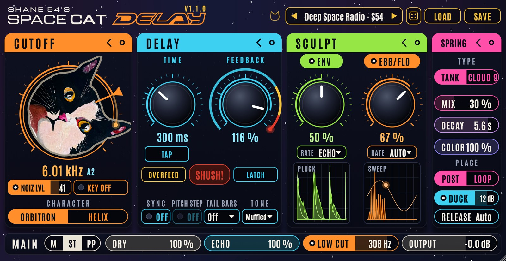

Space Cat Plugins
Character-first effects for people who like their sound a bit wild. Designed and built by a producer, for producers.
Meet the Space Cat Delay
The plugins
A noisy, self-oscillating, character-first delay with a wild filter, a tail you can bounce, and a spring-and-cloud reverb. Not a clean delay. A mood.
Details →The TANK and CLOUD 9 engines of the Space Cat Delay, grown into a standalone reverb that builds atmosphere its own way.
Preview →A vintage-flavoured vocoder and voice processor for robot choirs, pads and talking synths.
Preview →A characterful limiter with a built-in EQ, for squashing things in the most musical way.
Preview →Who makes these?
Shane 54 has been making music for four decades. His first instrument was an EMS Synthi at the age of five (his father was a sound engineer), and he saw a mixing desk before he could talk.
Since then he has worked in every era of recording: analog multitrack tape, ADAT and digital multitrack, Cubase Audio, the very first VST plugins, Logic 5.5.1 on Windows, Pro Tools, and an Ableton Live 3.4 that did not even have MIDI yet. He has tried to squeeze bass out of a Steinberg Neon, and he is the kind of plugin geek who can trade notes on them for hours with anyone wired the same way.
- 1992First record released. Most of the decade as a hugely successful pop performer; his songs are still in heavy rotation on radio, and a few have become 90s pop classics.
- 2002Goes solo as a DJ/producer, internationally recognised as Hungary's only one. Remixes of Madonna, Lenny Kravitz, Above & Beyond and Paul Oakenfold are played by the biggest underground and mainstream DJs of the era.
- 2007–2016As one half of Myon & Shane 54: three years in the UK DJ Mag Top 100, countless world tours, and the only Hungarian act to top the US Billboard Dance Chart.
That is why these plugins exist: after forty years of using other people's tools, he builds his own, with the character he always wanted in his sessions.